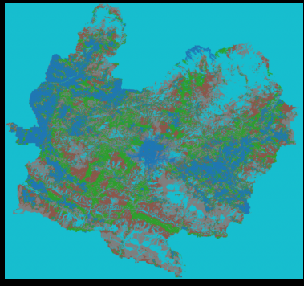
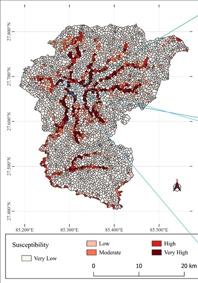
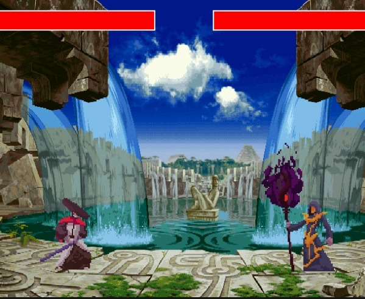

Projects

LandFill Site Suitability Mapping
A deep learning automated approach for landfill site suitability mapping of Kathmandu Valley and its neighbouring districts using Unet, ResUnet and DeepLabV3. Focused on urban waste management and sustainable development.
→ View on GitHub
Flood Susceptibility Mapping (2024)
Developed a deep learning approach for risk assessment and flood susceptibility mapping of Kathmandu Valley using CNN and Random Forest. Focused on urban fluvial flood prediction and mitigation strategies.
→ View on GitHub
Fighting Game (2023)
Designed a Tekken‑like fighting game using Pygame. Implemented character animations, collision detection, and responsive controls for an engaging gameplay experience.
→ View on GitHub